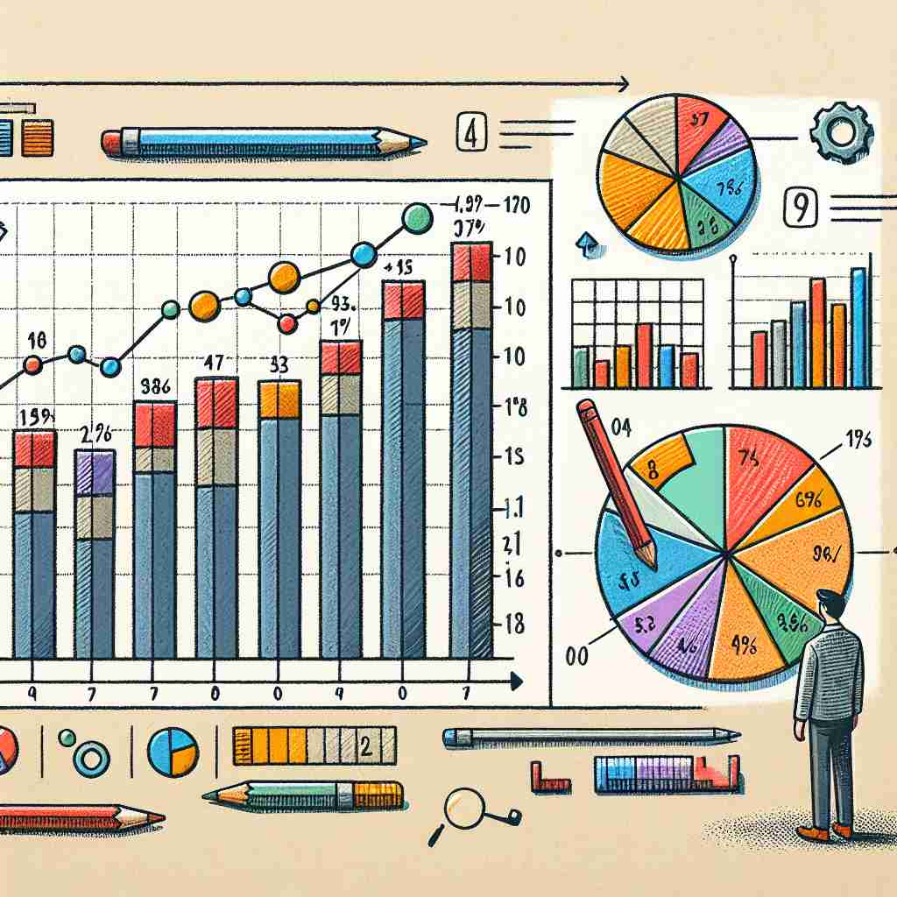

💬 The researcher needs to analyze the statistics to understand the results. 研究人员需要分析统计数据以理解结果。

💬 The report includes statistics data analysis to illustrate the results. 该报告包含统计数据分析以说明结果。
💬 The students are learning in their statistics class. 学生们正在他们的统计学课上学习。

💬 Students learn how to analyze statistics in their class. 学生在课堂上学习如何分析统计数据。
🧠 想象'statistics'是一个大箱子，里面装满了数字。这个箱子代表了收集和分析数据的科学（核心含义）。从这个核心出发，我们可以看到箱子里的具体内容（收集到的数据），以及如何整理和使用这些数据（数学计算）。无论是科学方法、具体数据还是计算过程，都源于这个装满数字的'统计箱子'的概念。
🔈 [stə'tɪstɪks]
🗝️ n. the science of collecting and analyzing numerical data 收集和分析数字数据的科学
🎭 在一间大学教室里，教授正在讲解如何设计一项社会调查。他展示了一张复杂的流程图，说明如何从统计的视角收集和分析数据。学生们聚精会神地记下笔记，体现了'statistics'作为一门科学的本质。
💬 She studied statistics at university. 她在大学学习了统计学。
🌳 由词根 'stat'（站立，状态）和名词后缀 '-istics' 组成，表示 '统计学'。词根 'stat' 来源于拉丁文 'stare'（站立），引申为状态、数据的含义。
🕸️ 1. static: 静态的 2. status: 状态 3. statue: 雕像
💡 记忆 'statistics' 可以联想 'state'（状态）和 'tics'（技术），即通过技术手段对状态进行分析整理，形成 '统计学'。